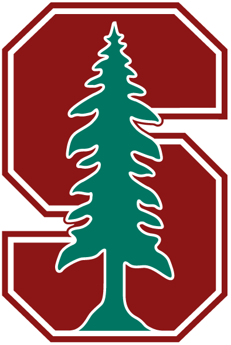
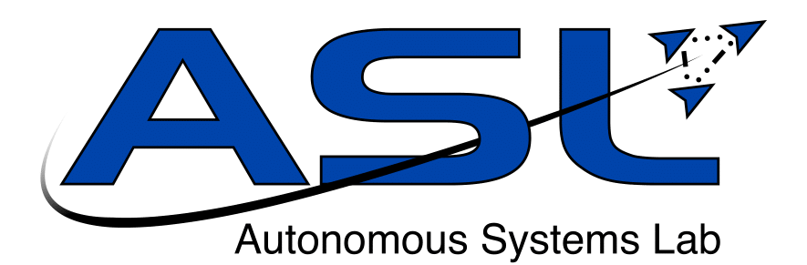

About Me
I finished my Bachelor's of Applied Science with High Honours in 2016 in the University of Toronto's rigorous Engineering Science program, majoring in Electrical and Computer Engineering with a Robotics/Mechatronics minor.
Education
-

September 2016 - Present
Stanford University
Computer Science - Master of Science (MS)
Stanford, CA - USA
- Cumulative GPA: 3.97
- I have had the pleasure of working in the following labs:


-

September 2012 - June 2016
University of Toronto
Engineering Science - Bachelor of Applied Science (BASc) with High Honours
Toronto, ON - Canada
- Cumulative GPA: 3.93
- Undergraduate thesis with Professors Raquel Urtasun and Sanja Fidler in Visual SLAM and 3D Scene Segmentation.
- Award-winning TA for CSC411: Introduction to Machine Learning.
- Won the final AER201: Engineering Design competition.
- Ranked in the top 10% of Engineering Science students (June 2014).
-
September 2003 - June 2012
Bayview Glen
Ontario Secondary School Diploma (OSSD)
Toronto, ON - Canada
- Top of Grade (highest overall average) for Grades 11 and 12.
- Graduated as an Ontario Scholar and Governor General’s Academic Medal holder.
- Graduated as an Advanced Placement Scholar with Honour.
Work and Research Experience
-

June 2017 - September 2017
Prime Air SDE Intern
Amazon.com - Seattle, WA - USA
- Worked with Principal Research Scientist Ishay Kamon in the Autonomy team.
- This is a highly confidential project. As such, I cannot share any information about the nature of my work.
- The project was completed successfully and a return offer was extended.
-
April 2017 - June 2017
CS231A Course Assistant
Stanford University - Stanford, CA - USA
- Assisted with many aspects of running CS231A: Computer Vision From 3D Reconstruction to Recognition, taught by Professor Silvio Savarese.
-
January 2017 - June 2017
Independent Research Project
Stanford University - Stanford, CA - USA
- Worked in the Computer Vision and Geometry Lab (CVGL) and Autonomous Systems Lab (ASL) with Professors Silvio Savarese and Marco Pavone on making Reinforcement Learning more robust with Control Systems.
-
September 2016 - June 2017
Research Assistant
Stanford University - Stanford, CA - USA
- Worked in the Stanford Network Analysis Project (SNAP) Lab with Professor Jure Leskovec on analyzing large-scale physical activity data with modern Data Science methods.
-
September 2016 - December 2016
Independent Research Project
Stanford University - Stanford, CA - USA
- Worked with Professor Andrew Ng on Neural Language Correction.
-
May 2016 - August 2016
Prime Air SDE Intern
Amazon.com - Seattle, WA - USA
- Worked with former NASA Astronaut Neil Woodward in the Flight Test team.
- This is a highly confidential project. As such, I cannot share any information about the nature of my work.
- The project was completed successfully and a return offer was extended.
-
January 2016 - May 2016
CSC411 Teaching Assistant
University of Toronto - Toronto, ON - Canada
- Award-winning TA for the popular CSC411: Introduction to Machine Learning course, taught by Professor Sanja Fidler.
-
September 2015 - May 2016
Undergraduate Thesis
University of Toronto - Toronto, ON - Canada
Worked with Professors Raquel Urtasun and Sanja Fidler to:
Create a semantically labelled 3D map of an outdoor environment from video recorded by a quadrocopter and augment that map with cartographic data (ie. from OpenStreetMap).
More specifically, the goals of the project were:
- Fly a quadcopter around an outdoor environment and, from video recorded during the flight, create a 3D reconstruction of the environment. The LSD-SLAM algorithm was used for this since the cameras available to us were monocular.
- Design and implement a data annotation framework to support and automate the labeling of collected data.
- Label objects within the 3D representation of the environment, such as people, trees, buildings, etc... For this I formulated a CRF, incorporating cartographic data.
Project results and reports can be viewed at this Google Drive link.
-

May 2015 - August 2015
Summer Research Intern
ETH Zurich - Zurich - Switzerland
- Worked in Professor Raffaello D’Andrea’s Institute for Dynamic Systems and Control, specifically in the Flying Machine Arena with PhD Candidates Dario Brescianini and Robin Ritz.
- Removed superfluous code from an open source motor controller and implemented new features such as motor calibration, emergency safety states, and a better motor startup routine in C.
- Simulated dynamic motor and propeller system responses in Python.
- Technology used: STM32 C Code, Motor Controller PCB Chips, Quadrotor Flying Vehicles.
-
May 2014 - July 2014
SDE Intern
Amazon.com - Seattle, WA - USA
- Worked on the Demand Forecasting team creating a real-time simulation tool. The project was completed successfully and a return offer was extended to me.
- Worked with Big Data, using the Hadoop framework (MapReduce, HDFS, etc.) to process large amounts of simulation data generated by a machine learning module.
- Created a web service with Spring, designed and implemented a website UI with GWT, and used the AWS SDK for storing and retrieving data from S3.
- Gave a presentation to 100+ Amazon employees regarding my project and its design, implementation, and performance.
- Concepts employed: Big Data, Highly Scalable Distributed Systems, and Data Mining.
-

May 2013 - August 2013
Agile Engineer Co-op
Xtreme Labs (now Pivotal) - Toronto, ON - Canada
- Learned Agile development methodologies and applied them to real-world projects.
- Provided input on and developed an app that has 1,000,000+ installs.
- Technology used: Android SDK for apps and HTML/CSS3/PHP for website development.
Awards
-
September 2012 - June 2016
Dean’s Honour List
University of Toronto - Toronto, ON - Canada
Placed on the Dean’s Honour List for all undergraduate semesters.
-
May 2016
Engineering Science Award of Excellence
University of Toronto - Toronto, ON - Canada
Received for maintaining a CGPA greater than 3.90.
-
May 2016
Computer Science TA Award
University of Toronto - Toronto, ON - Canada
Received for being the best Computer Science TA in the Winter 2016 semester.
-
April 2016
NSERC Master's Postgraduate Scholarship (CGS-M) (Declined)
National Sciences and Engineering Research Council (NSERC) - Canada
The CGS-M Program provides financial support to high-calibre scholars who are engaged in eligible master’s programs in Canada (more information here).
-
September 2012
University of Toronto Scholarship
University of Toronto - Toronto, ON - Canada
Received for being one of the top 300 entrants to the University of Toronto in 2012.
-
June 2012
Governor General’s Academic Medal
Bayview Glen - Toronto, ON - Canada
Received for having the highest average upon graduating from a secondary school.
-
June 2011 and June 2012
Top of Grade
Bayview Glen - Toronto, ON - Canada
Received for having the highest overall average.
-
June 2012
AP Computer Science, Chemistry, Calculus, and Physics Awards
Bayview Glen - Toronto, ON - Canada
Received for the highest average in AP Computer Science, AP Chemistry, AP Calculus, and AP Physics.
-

March 2012
ECOO Regional Programming Contest 3rd Place
Bayview Glen - Toronto, ON - Canada
-
June 2011
Bayview Glen Scholarship
Bayview Glen - Toronto, ON - Canada
-
April 2011
Canadian Senior Math Contest Distinction
Bayview Glen - Toronto, ON - Canada
Received for placing in the top 5% of the University of Waterloo Canadian Senior Math Contest.